Azure Cloud Shell comes with the Azure CLI already configured, which makes setup straightforward. We'll be using Azure Cloud Shell throughout this guide, so to get started we need to get Cloud Shell pointed toward the subscription we want to work with.
NB: All shell instructions are based on using the cloud shell, using a local powershell, bash session or command prompt may cause unexpected results.
i) Access Azure Cloud Shell using the >_ Icon in the top right corner of the portal.
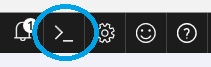
ii) Point to your Azure subscription
If you have more than one subscription in your azure portal, it's a good idea to first check which one your CLI is pointed to. The command for this is:
az account show
If it's not pointed to the subscription you want to use, you can re-point your CLI to the correct subscription using:
az account set --subscription <SubscriptionId>
You can list out all subscriptions you have access to using:
az account list
We need to create a resource-group to ring-fence all of our work, we'll start out by storing a couple of variables we're going to use again in our shell. (Note; many resources within Azure require a unique name, as such we recommend you use the guidelines in the published naming conventions)
Resource group names must be globally unique within azure, so make sure its both memorable, and specific to you and your project.
RESOURCE_GROUP=<unique name>
LOCATION=eastus
az group create --name $RESOURCE_GROUP --location $LOCATION
Like resource group names, CosmosDB names must be globally unique within azure, so again we should select something specific.
COSMOSDB_NAME=<unique database name> _(names must be all lower case and no symbols)_
We can now go ahead and use the Azure CLI within the Cloud Shell to create our CosmosDB Instance.
az cosmosdb create -g $RESOURCE_GROUP -n $COSMOSDB_NAME --locations "EAST US2"=0
This command will take some time to complete. You'll know it's succeeded when the cloud shell console outputs something like this, containing the name you specified in step 1 above in the 'documentEndpoint':
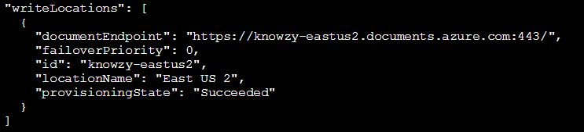
For this step we'll need to use the CosmosDB Data Migration Tool that you should have already downloaded and extracted.
We're going to perform the following steps for 3 collections we need to add to Azure; Customers, Products and Orders. For convenience sake you can download a zip file containing all three: Here.
i) Load up the UI version of the data migration tool by running 'dtui.exe'
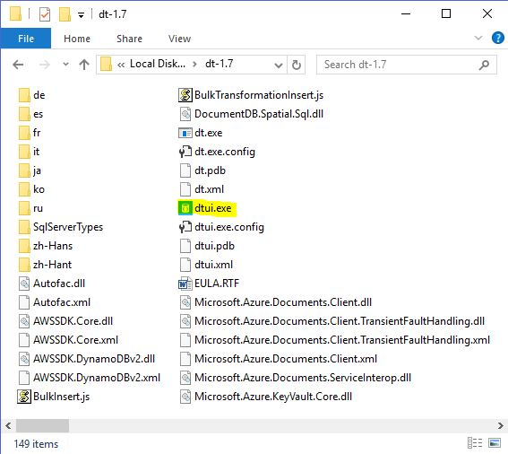
ii) You should be greeted with the following screen below, we can just click 'Next' for now.
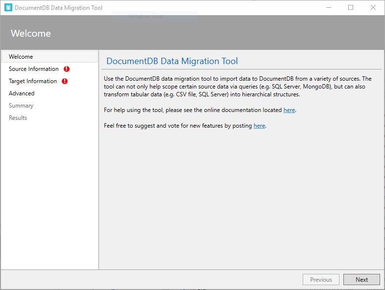
iii) This is the 'Source Information' screen where we specify the information source for our import, select the JSON file for the collection you want to import (We'll use customers.json for our example) then click next to move on.
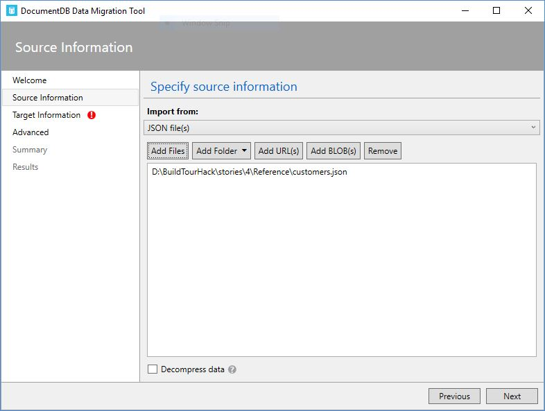
iv) You should be presented with a screen that looks like below, the 'Target Information' screen, where specify information about the destination of our import. First set the 'Export to' option to: 'CosmosDB - Sequential record import (partitioned collection).
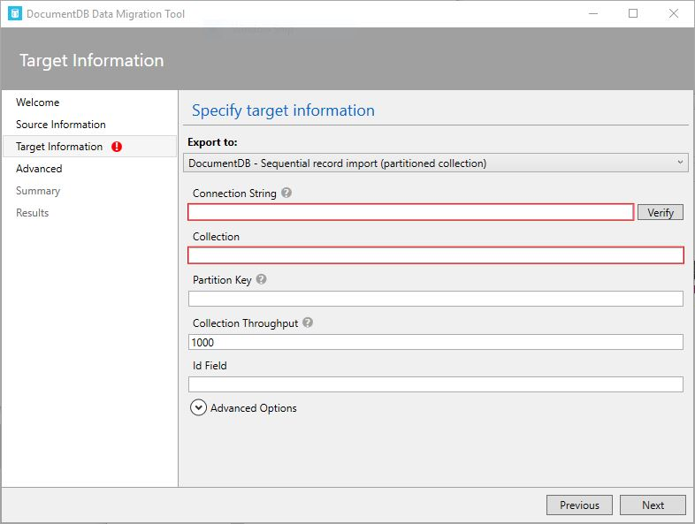
v) We'll need to retrieve our 'Connection String' from the Azure Portal. Open the portal, and select your CosmosDB Instance, then click on 'Keys' and select 'Read/Write Keys' and click the button next to 'PRIMARY CONNECTION STRING' to copy it to your clipboard.
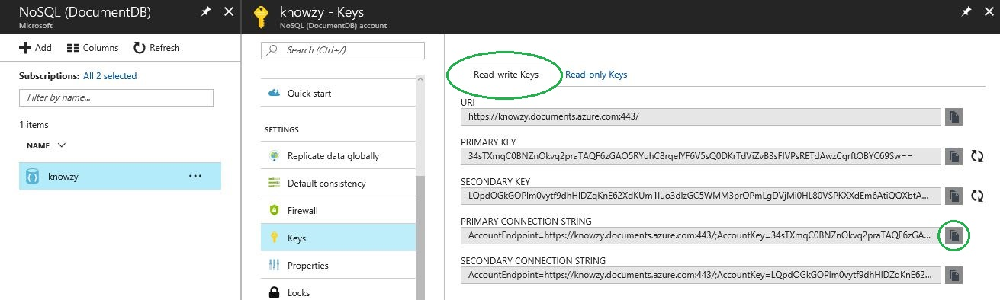
vi) Go back to the CosmosDB Data Migration Tool and paste the value into the box for the connection string. The importer also requires that you specify the database you'll be importing to so add the following string with the name of your database (which you defined in step 2a) to the end of the connection string you just pasted:
Database=<your CosmosDB name>
So you have something that looks like this:
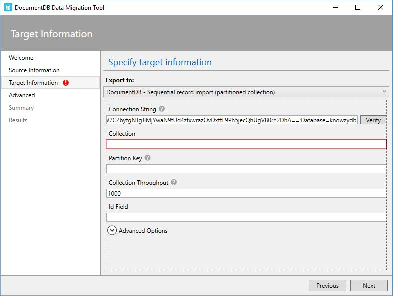
v) Click the 'verify' button, and you should get confirmation that the importer can successfully connect to your CosmosDB. Which should look like this:
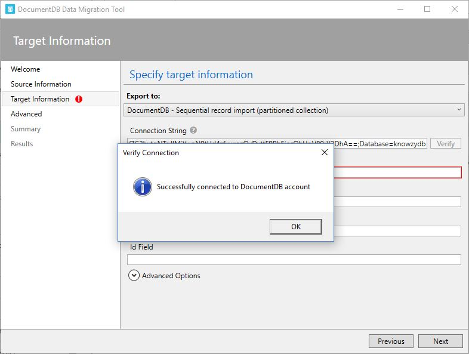
vi) Now we need to specify the other parameters for the new collection, complete the rest of the form as below:
Once your form looks as below, then we're ready to click next!
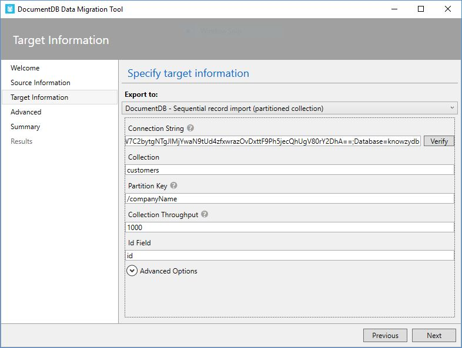
vii) Click 'Next' on the 'Advanced' settings screen, we want our errors to show in the tool UI so we don't need to specify anything here. Then you should be presented with a screen that looks like this:
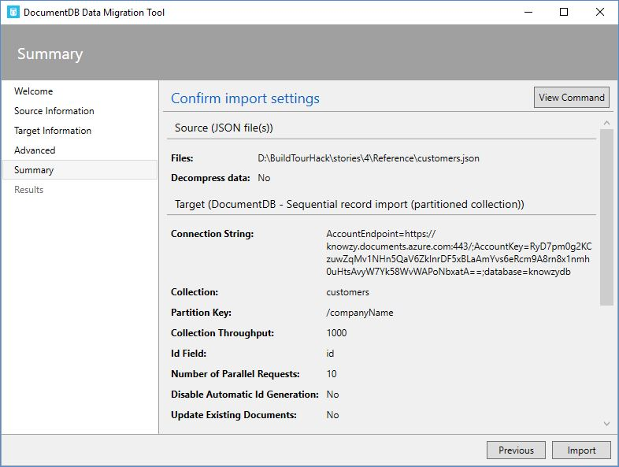
viii) Carefully review the import settings, and when you're satisfied click 'Import', if the import fails, errors will be displayed in the UI. All being well, your import will succeed and you'll see a screen similar to:
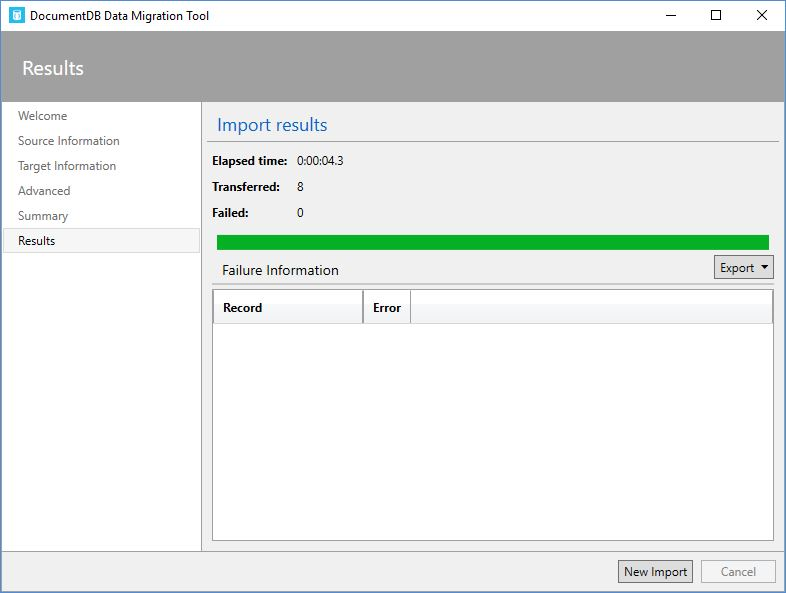
ix) You can now return to the portal, select your CosmosDB Instance, and click on 'Document Explorer' to explore your new schema.
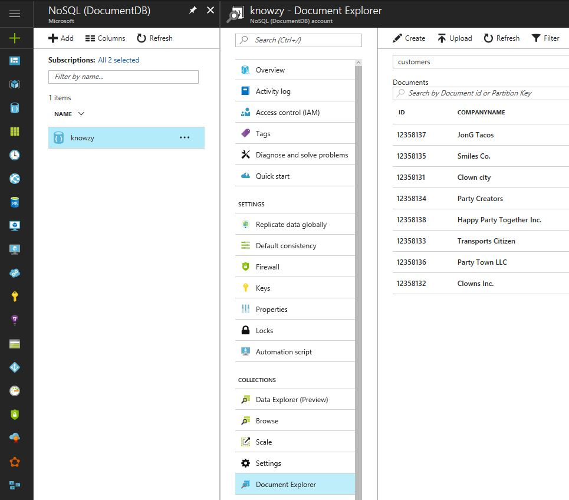
x) To import the other two collections (products and orders in our example given here), simply click 'New Import' and follow steps (ii) through (ix) using the next JSON file and schema Name for your chosen collection.
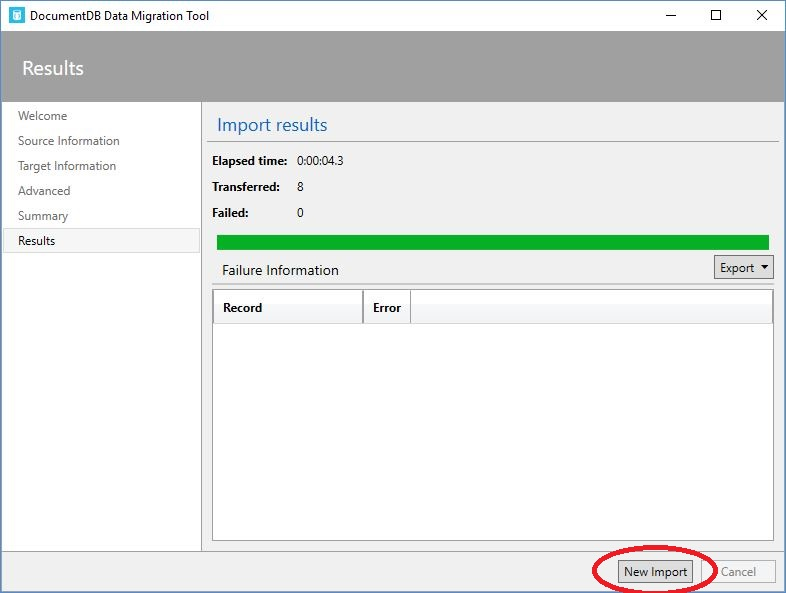
CosmosDB Migration Tool Download